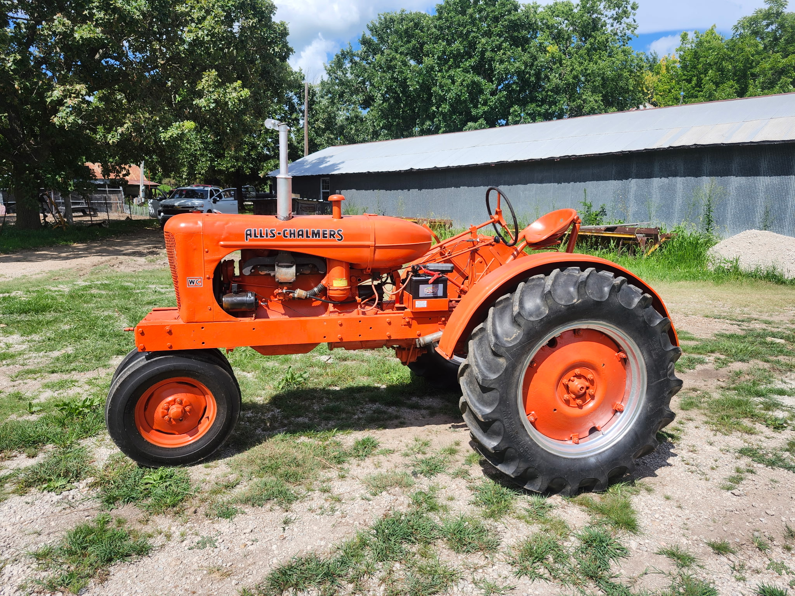
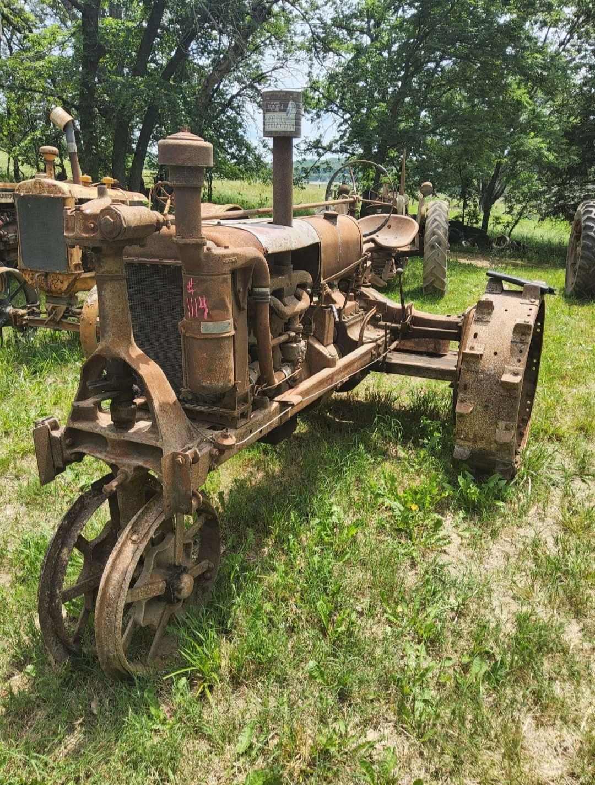
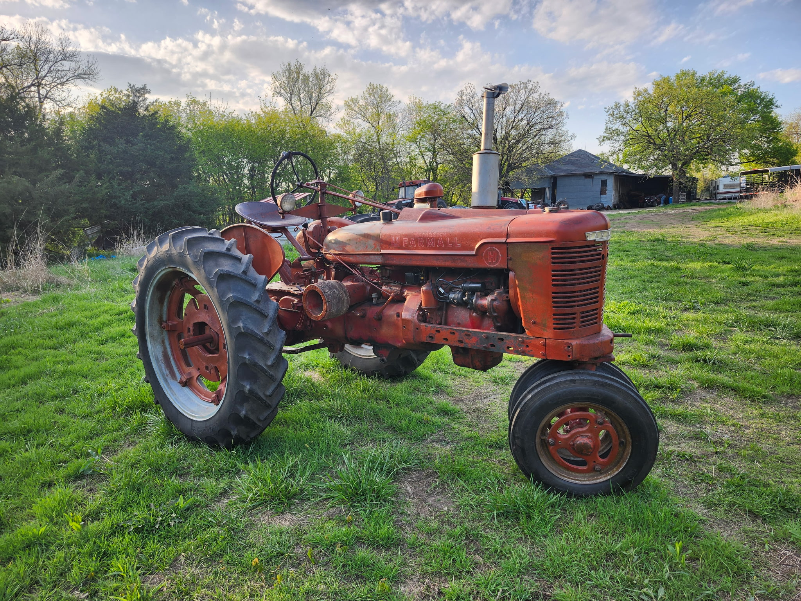
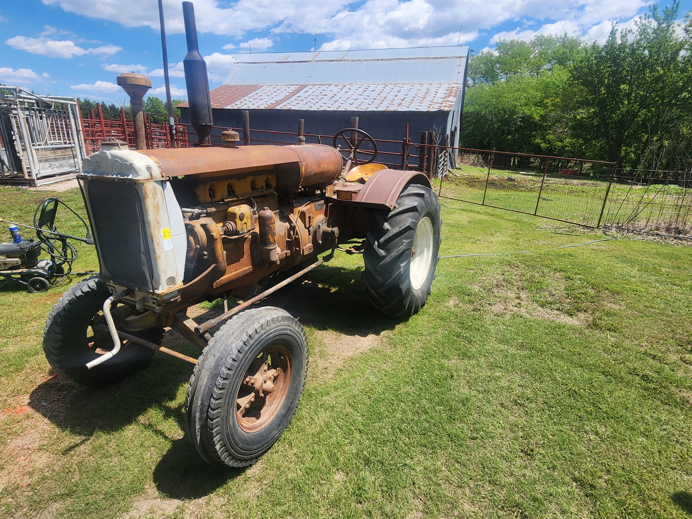

Vintage tractors, running right.
Day Tractor Repair keeps antique and vintage tractors of every make working the way they were built to — engines, hydraulics, electrical, and everything in between. If it's got a serial number older than you, we've probably got our hands in one just like it.

Latest restorationHands-on since the family farm
Decades of real repair work, not just parts-swapping — diagnosed and fixed by someone who's turned wrenches on this equipment his whole life.
Every make, pre- and post-war
Allis Chalmers, John Deere, Farmall, Ford, Case, Massey — if parts exist or can be made to fit, we can get it running.
Local to Council Grove
Shop visits or on-farm service across the Flint Hills. No corporate runaround — just a straight answer and a fair price.
Repair and restoration, done right the first time
From a rough-running engine to a full ground-up restoration, here's what keeps the shop busy.
Engine rebuilds & tune-ups
Full teardown and rebuild, or a tune-up to get an old engine breathing right again — compression, timing, carburetion, the works.
Hydraulic system repair
Leaking lift arms, weak three-point hitches, unresponsive steering — hydraulic issues diagnosed and fixed, not just patched.
Electrical & wiring diagnostics
Old wiring, tired generators, magnetos that won't spark — electrical gremlins tracked down and rewired to last.
Sheet metal & restoration bodywork
Straightening, patching, and refinishing hoods, fenders, and grilles to bring a tired tractor back to show condition.
Parts sourcing for obsolete models
Hard-to-find and discontinued parts tracked down, sourced, or fabricated so a rare model doesn't sit idle.
Pre-purchase inspections
Thinking about buying a vintage tractor? Get it looked over first so you know exactly what you're taking home.
Someone who actually knows this iron
- 01
Grew up running this equipment
Raised on a working farm outside Council Grove, learning engines and equipment before he learned to drive a truck.
- 02
Specializes in vintage & antique models
Most shops won't touch anything without a computer in it. This one specializes in exactly that — pre-1975 tractors of every brand.
- 03
A soft spot for Allis Chalmers
Persian orange runs deep here — but every make gets the same care, whether it's a WD-45 or a Farmall on the next lift.
- 04
Straight talk, fair pricing
You'll get a real diagnosis and a real number before any work starts — no surprises when the bill comes.
Day Tractor Repair started the way most good shops do — with one guy who couldn't leave a tractor alone. Growing up on a family farm near Council Grove, he was rebuilding carburetors before he was rebuilding his own truck, and spent years keeping the family's own fleet of aging equipment running through every planting and harvest.
After more than a decade working on modern farm equipment professionally, he found himself pulled back to the old iron — the tractors built to be fixed, not replaced. Today Day Tractor Repair focuses on exactly that: vintage and antique tractors of every make, kept running for the farmers, collectors, and Sunday tinkerers of the Flint Hills.
Recent work
A look at what's come through the shop lately.



More photos added as new work comes through the shop.
What customers say
Brought in a WD-45 that hadn't run in years. Got it back sounding better than tractors half its age.
Straightforward, fair, and actually explains what's wrong instead of just handing you a bill.
Sourced a part for our old Farmall that three other shops said didn't exist anymore.
Placeholder quotes for this trial site — replace with real customer reviews before launch.
What to expect
Call or request a quote
Tell us the make, model, and what's going on — over the phone or through the form below.
Diagnosis
We take a look — in the shop or on your farm — and figure out exactly what it needs.
Upfront quote
You get a clear price before any work begins. No surprises, no pressure.
Back in the field
Repairs completed and tested, so it's ready for work — or the next parade.
Got a tractor that needs some love?
Call the shop or send over the details — most quotes turn around within a day or two.
Common questions
Yes. While Allis Chalmers is a personal favorite, the shop regularly works on John Deere, Farmall/International, Ford, Case, Massey Harris/Ferguson, and other vintage makes.
Yes, on-site visits are available across the surrounding Flint Hills region. Call to check if your location is within the service area.
Often, yes. For obsolete or discontinued parts, we'll track down NOS or good used parts, or fabricate a fix when nothing off-the-shelf will work.
Initial phone consultations are free. A hands-on diagnosis may carry a small fee, which is applied toward the repair if you move forward.
A tune-up might take a day or two; a full restoration can take several weeks to a few months depending on parts availability and scope. You'll get a timeline with your quote.
Get in touch
Call, email, or send over the details below — we'll follow up with a quote.
Phone
(620) 767-2913Service area
Council Grove, KS & the surrounding Flint Hills regionHours
Mon–Fri, 8am–5:30pm · Sat by appointmentShop tips & seasonal reminders
The occasional email — nothing more. Unsubscribe anytime.